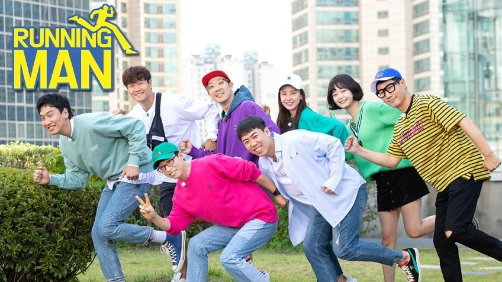
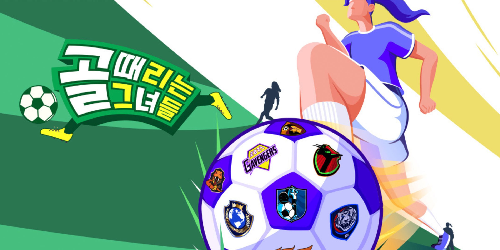
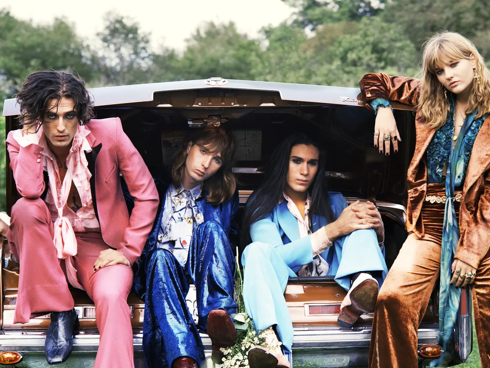

| In this slot I will share with you guys my top favourites of variety show and Bands | |
| Variety Show | Band |
|  |
Running Man was originally classified as an "urban action variety"; a genre of variety shows in an urban environment.The MCs and guests were to complete missions at a landmark to win the race. The show has since shifted to a more familiar reality-variety show concept focused on games.It has garnered attention as being the comeback program for Yoo Jae-suk, the main MC of the program, after leaving Good Sunday's Family Outing in February 2010. The show has become popular in other parts of Asia and has gained online popularity among Hallyu fans, having been fansubbed into various languages, such as English, Persian, Spanish, Portuguese, French, Italian, Thai, Vietnamese, Chinese, Malay, Indonesian, Burmese, Arabic, Russian, and Turkish. The show has made it to the list of Business Insider's 20 TV Shows of 2016. |
|
Kick A Goal (also known as Shooting Stars) (Korean: 골 때리는 그녀들) is a South Korean sports variety show that aired on SBS TV. It was the first pilot program that was televised on February 11 and 12, 2021. Following positive receptions, it started broadcasting regularly on 16 July 2021. This show is about women's football. Female artists and different television personalities compete with each other in the form of Five-a-side football tournament. It mainly adopts the rules of futsal. There are two periods of 10 minutes with time stopping at every dead ball. There is no additional time. There is no draw in this show. Game is directly going into penalty shoot out if the scores are equal after normal playing time. |
 |
|  |
|
Måneskin is an Italian rock band that gained international recognition and popularity after winning the Eurovision Song Contest in 2021 with their song "Zitti e buoni." The band members are Damiano David (vocals), Victoria De Angelis (bass), Thomas Raggi (guitar), and Ethan Torchio (drums). Måneskin formed in Rome in 2016 and initially gained attention through their participation in the Italian version of the talent show "X Factor" in 2017, where they finished in second place. After their Eurovision win, Måneskin's popularity soared, and they became known for their energetic performances and rock sound. Please note that developments or new information about Måneskin may have occurred since my last update in January 2023. |